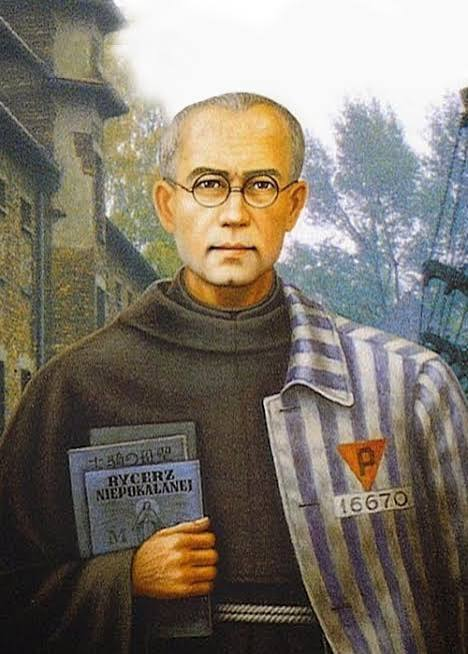

Hola, Sophi.
Si estás leyendo este encuentro, quizás hoy te sientes sola.
Quizás sí hay personas a tu alrededor, pero sientes que ninguna termina de acompañarte.
O quizás simplemente hoy no hay nadie a tu lado y extrañas caminar junto a alguien.
A veces pasa.
Y está bien reconocerlo.
Pero antes de continuar, quiero recordarte una promesa que Cristo mismo nos hizo:
«Yo estoy con ustedes todos los días hasta el fin del mundo.» Mt 28:20
Qué mayor consuelo que saber que nuestro Creador nunca nos abandona.
Qué mayor compañía que Aquél que nos conoce mejor que nosotros mismos.
Qué mayor motivo de esperanza que saber que Aquel que nos creó también nos ama.
Muchas veces nuestros sentidos no alcanzan a percibir toda la realidad.
Vemos solamente aquello que es material.
Pero fuimos creados para mucho más que lo visible.
Dios no deja de estar presente simplemente porque nuestros ojos no puedan verlo.
Él permanece.
Siempre acompaña.
Siempre sostiene.
Siempre llama.
Porque Aquel que es Amor nunca abandona a quienes ama.
Quiero contarte una historia.
Escucha este evangelio.
Dos discípulos que caminaban solos y tristes... hasta que alguien se unió a ellos.

IV · La sorpresa

San Maximiliano Kolbe · 1894 — 1941En 1941, en el campo de concentración de Auschwitz, las autoridades seleccionaron diez prisioneros para morir de hambre en un búnker subterráneo.
Uno de los seleccionados lloró. Tenía esposa, tenía hijos.
En ese momento, el sacerdote franciscano Maximiliano Kolbe se adelantó.
«Quiero tomar el lugar de ese hombre. Soy sacerdote. No tengo mujer ni hijos.»
Las autoridades aceptaron.
Los testigos que sobrevivieron contaron que Kolbe transformó aquel lugar de desesperación en un lugar de oración. Los prisioneros rezaban juntos. Cantaban. Consolaban a los que agonizaban.
No porque el lugar hubiera cambiado.
Sino porque alguien decidió no dejar solos a los demás.
Incluso en el lugar más oscuro... alguien eligió caminar contigo hasta el final.
cuando me sienta sola,
recuérdame que Tú nunca dejas de caminar conmigo.
Abre mis ojos para descubrir tu presencia
incluso cuando no la perciba.
Y hazme también capaz de acompañar
a quienes hoy se sienten solos.
Amén.
¿A quién podrías acompañar tú hoy?